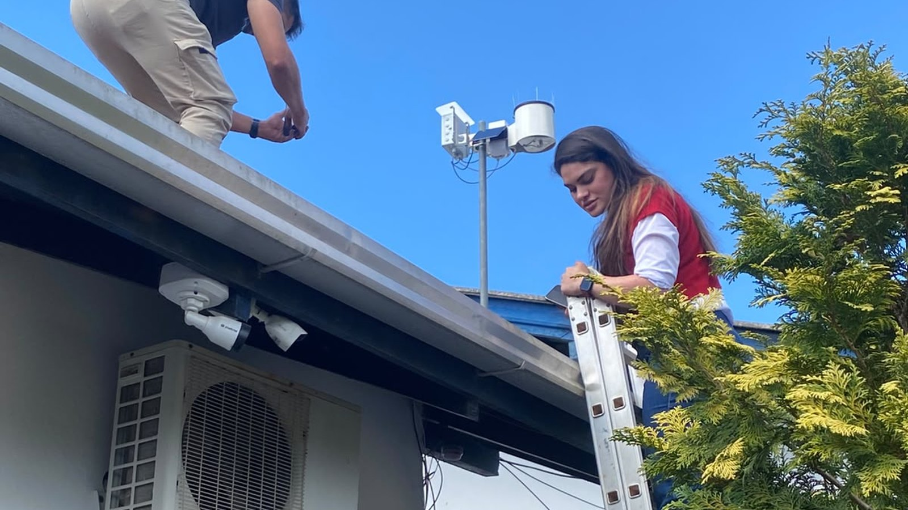

Itapema · Defesa Civil
Itapema · Defesa CivilItapema ganha duas estações que medem chuva e vento, e a Defesa Civil comprou outras duas com recurso próprio
O começo da mesma rede, contado do lado de cá da divisa.
A Prefeitura de Porto Belo publicou em 11 de setembro que a cidade passou a ter três estações meteorológicas: duas em escolas, no Sertão de Santa Luzia e no Araçá, e uma na sede da Defesa Civil. São da mesma rede regional que deu duas a Itapema em 4 de setembro. Fomos aos sites das prefeituras e somamos o que cada uma anunciou: 10 dos 38 pontos prometidos até o fim de setembro têm cidade definida, e as outras sete cidades do consórcio não publicaram nada.
Em 30 segundos · Modo de Leitura, formato original Santa Informa
Porto Belo tem três estações meteorológicas novas.
A Prefeitura publicou em 11 de setembro.
Uma na Escola Fidélis Antonio Garcia, no Sertão de Santa Luzia.
Uma na Escola Francisco José Marques, no Araçá.
Essa mede também a velocidade do vento.
E uma na sede da Defesa Civil.
São da rede do CIM-AMFRI.
A mesma que deu duas a Itapema, em 4 de setembro.
Itapema comprou outras duas por fora.
Navegantes ficou com duas.
Balneário Camboriú, com três novas.
Somando, dá 10 pontos.
Em 4 cidades das 11 do consórcio.
O projeto promete 38 pontos.
O prazo é o fim de setembro.
Faltam 18 dias.
Porto Belo tem 32.615 moradores.
Itapema tem 88.842.
Dá uma estação para cada 10.872 em Porto Belo.
E uma para cada 44.421 em Itapema, contando só a rede.
Essa conta é nossa.
Só Balneário Camboriú publicou preço.
Foram R$ 83,9 mil.
E a chance de El Niño muito forte está em 95%.
InfraestruturaPublicada em Redação Santa Informa

Porto Belo passou a ter três estações meteorológicas dentro do município. A Prefeitura publicou a instalação em 11 de setembro. Duas ficaram em escolas: a Escola Municipal Fidélis Antonio Garcia, no Sertão de Santa Luzia, e a Escola Francisco José Marques, no bairro Araçá, que ainda recebeu equipamento para medir a velocidade do vento. A terceira ficou na sede da Defesa Civil. São aparelhos da mesma rede regional que colocou duas em Itapema em 4 de setembro. A cidade vizinha, com pouco mais de um terço da população daqui, ficou com uma estação a mais.
Fomos aos sites das prefeituras e somamos o que cada uma anunciou. Balneário Camboriú informou três pontos novos, e o bairro de cada um saiu depois em reportagem local: Nova Esperança, Taquaras e Cristo Luz, mais uma estação que já existia na Paróquia Santa Inês. Navegantes ficou com duas, na sede da Prefeitura e na EMEB Professora Maria Tereza Leal, no Porto Escalvado. Itapema ficou com duas, no Tabuleiro e na EMEB Vereador Paulo Reis. Porto Belo, com três. A soma dá 10 pontos em 4 cidades. O projeto inteiro prevê 38 pontos nos 11 municípios da AMFRI até o fim de setembro. Faltam 18 dias, e sete prefeituras ainda não publicaram uma linha sobre as suas.
Porto Belo tem 32.615 moradores na estimativa do IBGE para 2026, e Itapema tem 88.842. Com três estações, Porto Belo fica com uma para cada 10.872 moradores. Itapema, com as duas da rede, fica com uma para cada 44.421. Essa divisão é conta nossa, não do consórcio. Ela melhora quando entram os dois aparelhos que a Defesa Civil de Itapema comprou com dinheiro próprio: aí passa a ser uma para cada 22.210. Vale a ressalva: gente por quilômetro quadrado não é o único critério para escolher onde medir chuva, e terreno de morro e de baixada pesa na conta técnica. Mas o número ajuda a ver o tamanho de cada rede.
Quando escrevemos sobre as estações de Itapema, ficou uma pergunta sem resposta: quanto custa isso. Nenhuma prefeitura tinha divulgado valor. Agora apareceu um. A Prefeitura de Balneário Camboriú informou, ao anunciar a adesão, que o investimento da cidade seria de R$ 83,9 mil pelos três pontos de monitoramento. É o que uma cidade paga, não o contrato inteiro do consórcio. Itapema não publicou o seu, e Porto Belo também não.
O calendário aperta. Em 10 de setembro a Defesa Civil do Estado divulgou que a chance de El Niño muito forte entre setembro e dezembro subiu para 95%. A rede foi montada exatamente para esse cenário: medir chuva e vento ponto a ponto, em vez de trabalhar com estimativa feita para o litoral inteiro. O prazo dos 38 pontos e o começo da primavera caem no mesmo mês.
O resumo de 30 segundos está no topo e a versão completa é o texto acima. Aqui ficam as três leituras da casa sobre o mesmo assunto.
Clara, a otimista
Três estações a mais na Costa Esmeralda é notícia boa para todo mundo, inclusive para quem mora em Itapema. Chuva não respeita divisa de município. O que cai no Sertão de Santa Luzia hoje pode estar no Morretes daqui a uma hora, e agora existe um aparelho medindo isso no caminho.
Gosto também de ver duas das três numa escola. O equipamento fica em lugar cuidado, com gente responsável por perto, e a criança que passa todo dia embaixo dele acaba perguntando o que é aquilo. Serviço público que ensina de graça enquanto trabalha vale o dobro.
Seu Prudêncio, o criterioso
Merece atenção a repartição. O projeto promete 38 pontos e a gente só encontrou 10 anunciados, em 4 das 11 cidades, com o prazo terminando em 18 dias. Pode ser que o resto esteja instalado e ninguém publicou, o que já é um problema menor, mas é problema: rede de alerta serve para dar confiança, e confiança se constrói dizendo onde está cada aparelho.
Vale acompanhar também o depois. Estação meteorológica tem sensor que descalibra, bateria que acaba e pluviômetro que entope com folha. O anúncio fala da instalação e não fala de manutenção. Uma sugestão útil às prefeituras: publicar quem responde pela calibração e de quanto em quanto tempo ela acontece. Aparelho parado marcando zero é pior que aparelho nenhum, porque o zero parece informação.
Dito isso, é preciso reconhecer o acerto. Porto Belo escolheu bem os três lugares: o Sertão de Santa Luzia é área de morro e de estrada, o Araçá está na parte urbana e ganhou medidor de vento, e a sede da Defesa Civil é onde a leitura vira decisão. E colocar no ar antes da primavera, com a previsão de El Niño forte na mesa, é agir no tempo certo, não depois do estrago.
Caco, o sarcástico
Porto Belo tem 32 mil moradores e ficou com três estações. Itapema tem 88 mil e ficou com duas. Alguém dividiu essa conta por cidade, não por gente, e o resultado é que o vizinho mede o próprio vento com mais capricho.
Calma que Itapema reagiu: comprou duas por fora, com dinheiro do município. É a nossa versão de empatar o jogo, pagando a diferença no cartão.
Mas reclamar é forçar a barra. Até mês passado a chuva da região era medida por estimativa feita para um pedaço inteiro do litoral, o que na prática queria dizer olhar pela janela e torcer. Agora tem aparelho no telhado da escola mandando número de verdade. Tá lotado de estação porque o lugar é bom, e desta vez o progresso veio com pluviômetro.
Fontes: as três estações de Porto Belo, os endereços na Escola Municipal Fidélis Antonio Garcia, no Sertão de Santa Luzia, na Escola Francisco José Marques, no Araçá, e na sede da Defesa Civil, o equipamento extra de medição de vento, a data de publicação de 11 de setembro de 2026 e a foto desta página estão em Porto Belo amplia monitoramento climático com instalação de três estações meteorológicas, da Prefeitura de Porto Belo. A etapa inicial de 20 pontos em nove municípios, os 38 pontos nos 11 municípios da AMFRI até o fim de setembro, as duas estações de Navegantes e o funcionamento dos aparelhos estão em Navegantes recebe estações meteorológicas no Centro e no Porto Escalvado, da Prefeitura de Navegantes, de 4 de setembro de 2026. Os três pontos de Balneário Camboriú e o investimento de R$ 83,9 mil estão em Balneário Camboriú terá monitoramento ambiental e climático através do CIM-Amfri, da Prefeitura de Balneário Camboriú. Os bairros das estações de Balneário Camboriú e a estação que já existia na Paróquia Santa Inês saem de reportagem da TVC Panorama, de 2 de setembro de 2026, e por isso aparecem no texto com essa origem dita. As duas estações de Itapema, os endereços no Tabuleiro e na EMEB Vereador Paulo Reis e as outras duas compradas com recurso próprio estão na nossa matéria Itapema ganha duas estações que medem chuva e vento. Os 95% de chance de El Niño muito forte estão na nossa matéria Chance de El Niño muito forte no verão sobe para 95%, a partir da divulgação da Defesa Civil de Santa Catarina de 10 de setembro de 2026. As populações de 32.615 em Porto Belo e 88.842 em Itapema são a estimativa do IBGE para 2026, reunida no nosso Raio-X da Região. A lista de contratos consultada é a página de contratos do CIM-AMFRI. A soma dos 10 pontos e as divisões por habitante são contas nossas, feitas sobre as publicações citadas, todas abertas e conferidas uma a uma.
Itapema · Defesa CivilO começo da mesma rede, contado do lado de cá da divisa.
 Litoral · Clima
Litoral · ClimaO motivo de a rede ter pressa para ficar pronta neste mês.
Outra frente que a Prefeitura de Porto Belo abriu neste mês.